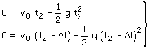
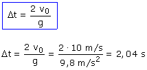

Ecuaciones de los movimientos (Referidas al tiempo t)
En caso extremo el encuentro entre las dos piedras se producirá cuando la primera llegue al suelo en el momento en que se lanza la segunda. Entonces en el instante, t2, ambas piedras estarán en la misma posición y2 = y'2 = 0  Resulta un sistema con dos incógnitas: t2, Δt  Evidente: el retardo de la segunda piedra tiene que ser mayor que el tiempo que tarda la primera en subir y bajar (2·v0 / g)
|